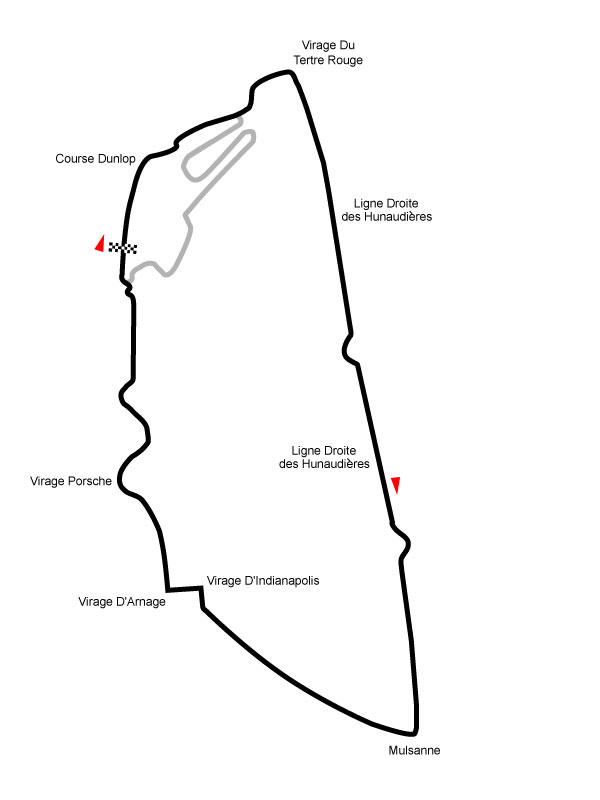

24 Hour Race Visualization
Relive the whole race of your selected teams in just a few minutes.
Change the speed of the animation with the slider from real life to 500 times faster. The default speed is real life x 100.
